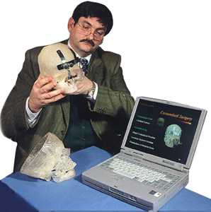

3D printing is a process of making a three-dimensional solid object of virtually any shape from a digital model. 3D printing is achieved using an additive process, where layers of material are laid down in different shapes.
(thanks Wikipedia)
Additive manufacturing is the process of starting with nothing and building an object by adding more and more material.
Example of additive manufacturing: 3D printing.
Subtractive manufacturing is the process of starting with a set amount of material and building an object by taking away the exisiting material.
Examples of subtractive manufacturing: milling, routing, carving.
"While installation is the dominate cost for solar power, it is estimated that precision 3D printing could drop production costs by 50%."
guardian.co.uk / gu.com/p/3exzx/twInvisalign braces are made with 3d printing!
3d Systems / bit.ly/13d52Nb"By using the Moon’s loose rocks (regolith) as a base for concrete, robots based on Monolite’s D-Shape 3-D printer will be able to build up a structure that uses as many local materials as possible."
Wired / bit.ly/YuAalr"...the front lines of a new industrial revolution as today’s entrepreneurs, using open source design and 3-D printing, bring manufacturing to the desktop." - Chris Anderson, from his book 'Makers - the New Industrial Revolution'
Buy the book / http://amzn.com/0307720950
Dr. Peckitt presented an amazing talk at the 2009 TEDxMelbourne event about his part in a new approach to reconstructive surgery: 3d printed body parts.
Let's just say that I stayed up all night googling 3D printing.